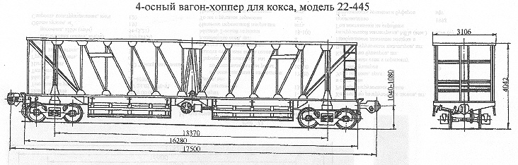

Назначение: для перевозки сухого охлажденного кокса
Параметры
| Номер проекта | 445.00.002 |
| Технические условия | ТУ 24.05.336-82 |
| Модель вагона | 22-445 |
| Тип вагона | |
| Изготовитель | ДВЗ им.Газеты "Правда" |
| Грузоподъемность, т | 59 |
| Масса тары вагона, т | 30 |
| Нагрузка: статическая осевая, кН(тс) |
218(22,25) |
| погонная, кН/м(тс/м) | 49,8(5,1) |
| Объем кузова, м³ | 118 |
| Скорость конструкционная, км/ч | 120 |
| Габарит | 1-Т |
| База вагона, мм | 13370 |
| Длина, мм: по осям сцепления автосцепок |
17500 |
| по концевым балкам рамы | 16280 |
| Ширина максимальная, мм | 3106 |
| Высота от уровня верха головок рельсов максимальная, мм | 4042 |
| Количество осей, шт. | 4 |
| Модель 4-осной тележки | 18-100 |
| Наличие переходной площадки | есть |
| То же с ручным тормозом | нет |
| Наличие стояночного тормоза | есть |
| Количество разгрузочных люков, шт | 4 |
| Размер разгрузочных люков в свету, мм | 600х4050 |
| Угол наклона, град: стен бункеров |
50 |
| торцовых стен к горизонту | 40 |
| Количество бункеров, шт | 2 |
| Число разгрузочных цилиндров, шт | 2 |
| Необходимое давление воздуха в разгрузочной магистрали, МПа(атм.) | 0,6(6) |
| Год постановки на серийное производство | 1975 |
| Возможность установки буфера | нет |